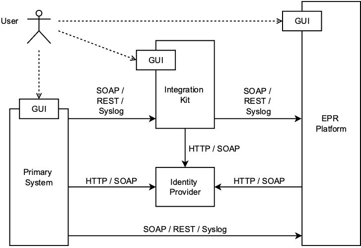

Primary system integration with CARA
Note
10.06.2025 ATNA IP changed for eprik-cara, it is now 83.228.201.24 (or atna.test.ahdis.ch)
22.9.2023 Release 5.0.2: No changes in API
29.3.2023: Release 5.0.0 on CARA INT: The EPR CARA integration version is newer than the production version, see changelog for differences.
This documentation describes how the Integration Kit can be used to test the integration of a primary system with the CARA integration system.
CARA offers different services:
- EPR https://epr.cara.int.post-ehealth.ch
- Transferts https://b2b.cara.int.post-ehealth.ch/.
- PMP (eMedication Service) https://cara-ch.github.io/emed-service-guide/
To access the integration system you will need to sign a contract/CGUE with CARA and provide an OID concept for your organization, in return you will get:
- an HCP test user for which you need an online authentication yourself (e.g. HIN ID) and connect that HCP test user with your online authentication
- two test patients for you with patient access, public test patients are listed here
- access to the Post E-Health Platform – developer portal for the EPR integration.
This will allow you to start the integration of the primary system.
The Integration Kit (short EPRIK) provides the following functionality:
- Authenticate an User and obtain an IdP assertion
- Proxy and log IHE transactions without client certificates and with basic validation of request / response

This allows a primary system to do a stepwise integration. The integration kit is only an add-on during development, testing and CANNOT BE used with a production environment.
Danger
Use only test data and no real patient data! EPRIK is completely open and every request / response to the integration system made is retrievable.
Testing the TLS connection with CARA INT
There are two different TLS connections with CARA INT you can test: the Syslog connection (to send ATNA messages) and the webservices connection (to send IHE requests).
In these tests, you have to use your own certificate and private key. Note that they may be stored in the same .pem file.
Syslog connection
You can test the Syslog connection with openssl:
In case of success, you will see "read R BLOCK" as last line of the output, and you should be able to send data in the connection (the command should not have returned).
If the command returns, and/or the last output line is "closed", then the connection failed.
In case of error, you can increase the log levels with the parameters -state -debug -msg -prexit.
Webservices connection
You can test the webservices connection with curl:
In case of success, you will see the content of the "HTTP 404 - Not Found" page of the Post. In case of error, you may see an error like "curl: (56) OpenSSL SSL_read: error:14094410:SSL routines:ssl3_read_bytes:sslv3 alert handshake failure, errno 0".
Warning
We had errors testing the Webservices connection with openssl, although it is working fine for the Syslog
connection at the same time.